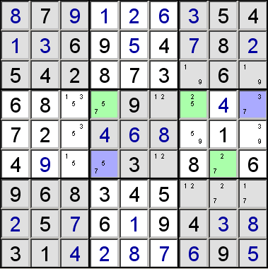

XY-Wing
This is similar to a short forcing chain consisting of two links for each candidate, but instead of placing a number, it allows for candidate elimination.
This a very common pattern in the harder puzzles.
In the partial puzzle below, consider the cells that have only the candidates
shown:
It can be easily seen that whichever value is in XY, the cell marked with
the asterisk cannot be Z.
if XY = X, then XZ = Z, so * cannot be Z
if XY = Y, then YZ = Z, so * cannot be Z
This allows Z to be eliminated from the candidates for the marked cell.
The cells don't need to form a perfect rectangle, but XY and XZ, and XY and YZ need to be linked by being in the same unit (that is the same column, row or block.) Once you've got this arrangement, you can eliminate Z from the candidates of all cells that occupy the intersection of the units containing XZ and
YZ.
Other possible combinations:
The astute among you will notice both the above examples have XY, XZ and
YZ in the same relative locations, and so can be combined to give:
All the cells marked with an asterisk can have Z removed from their
candidates.
In the puzzle below, the XY-wing in the green cells allows 7 to be eliminated
from the blue ones.
